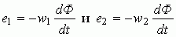

1. НАЗНАЧЕНИЕ, УСТРОЙСТВО И ПРИНЦИП ДЕЙСТВИЯ ТРАНСФОРМАТОРА
Трансформатор - это статический электромагнитный аппарат, предназначенный для преобразования переменного тока одного напряжения в переменный ток другого напряжения той же частоты.
Трансформаторы находят широкое применение для передачи и распределения электрической энергии, для различных технологических целей и для питания различных цепей радио-, электронно-вычислительной и телевизионной аппаратуры, устройств связи, автоматики, телемеханики и т. д.
Трансформаторы бывают двух типов: понижающие напряжение, например, до 400 В и ниже и повышающие его до 3...500 кВ и выше. Различают одно-, трёх- и многофазные, двух-, трёх- и многообмоточные трансформаторы. Диапазон мощностей силовых масляных трансформаторов общего назначения от 10 кВ∙А до 630 МВ∙А на напряжения (первичные) 10(6), 35, 110, 220, 330, 500, 750 и 1150 кВ, сухого исполнения – от единиц В∙А до 2500 кВ∙А на первичные напряжения 380, 500, 660, 10000 В и вторичные – 230 и 400 В. Силовые трансформаторы однофазные, мощностью 4 кВ∙А и ниже и трёхфазные - 5 кВ∙А и ниже относят к трансформаторам малой мощности. Такие трансформаторы широко применяются в преобразовательной, бытовой технике, радиоэлектронной и электронно-вычислительной аппаратуре.
Наряду с силовыми в практической электротехнике широко используются измерительные трансформаторы тока и напряжения.
При подключении первичной обмотки к сети первичный ток i1, проходя по её виткам w1, возбуждает в сердечнике синусоидальный магнитный поток (рис. 18.1) Ф = Фmsinωt, где ω = 2πf - угловая частота питающего напряжения u1. Этот поток, пронизывая витки w1 первичной и витки w2 вторичной обмоток, наводит в них ЭДС

или (для действующих значений)
E1 = 4,44f w1Фm и E2 = 4,44f w2Фm.
С вторичной обмотки снимается напряжение u2, которое подаётся к потребителю электрической энергии Zн.
Ток первичной обмотки трансформатора при отключенной нагрузке (Zн = ∞) является его током холостого хода I0. Его выражают в процентах по отношению к номинальному первичному току I1н, т. е.
i0 (%) = 100 I0/I1н.
Ток холостого хода i0(%) в силовых трансформаторах составляет (2…5)%, а в маломощных трансформаторах достигает (20...50)% номинального тока I1н.
Отношение ЭДС первичной обмотки трансформатора к ЭДС вторичной его обмотки, равное отношению соответствующих чисел витков обмоток, называют коэффициентом трансформации трансформатора
n = E1/ E2 = w1/w2.